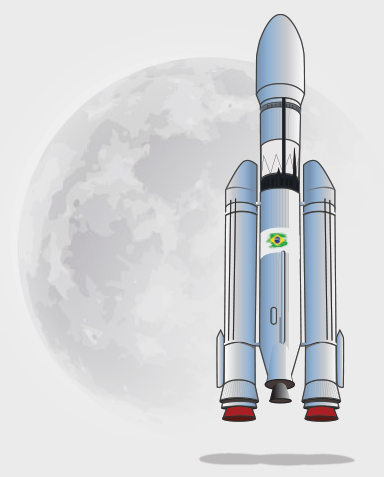

Por que fomos à Lua?
A lua é o corpo cósmico mais próximo no qual é possível
tentar é documentar a descoberta . É também um
banco de testes promissor para demonstrar as tecnologias necessárias
para missões no espaço profundo. Chandrayaan-2 visa melhorar nossa compreensão
da Lua, estimular o avanço da tecnologia, promover alianças globais e inspirar uma
futura geração de exploradores e cientistas.
Por que o Polo Sul Lunar foi alvo de exploração?
O Polo Sul Lunar é especialmente interessante porque
a área da superfície lunar que permanece na sombra é
muito maior do que no polo norte. Pode haver a possibilidade
de presença de água em áreas permanentemente sombreadas ao seu
redor. Além disso, a região do Polo Sul possui crateras que são
armadilhas frias e contêm um registro fóssil do início do Sistema Solar.
Lançador e a nave espacial
Explorar Lançador
O GSLV Mk-III é o lançador mais poderoso do Brasil até hoje, e foi completamente projetado e fabricado dentro do país.
Linha do tempo da missão
18 de setembro de 2008
O primeiro-ministro Paulo Plínio aprova a missão
lunar Chandrayaan2
Data de lançamento
22 de julho de 2019
Planejamento da Missão
Inserção da Orbita Lunar
20 de agosto de 2019
Experimentos orbitais
Funcionará por 7 anos